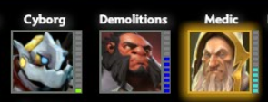

Rank
When the game ends, your performance can increase your officer's Rank and Renown experience.

The dashes next to attribute icons represent the highest ranked Officer build
that had that attribute. When creating a new character, that character's initial rank will be set to the minimum unlocked
rank for all the attributes selected.
For example, if you made a Rank 4 Skilled Medic and a Rank 3
Gifted Tactician (and all other attributes being equal), you could make a Rank 3 Gifted Medic because you
already unlocked Medic to Rank 4 and Gifted to Rank 3
Certain ranks are restricted until you have completed a specific difficulty on Hive/City or defeated a specific wave number on defense.
Once you have completed that difficulty, the unlocked ranks are available for every hero, not just the one
that completed the difficulty. It is not possible to go beyond rank 9 through Defense alone.
Heroes must achieve the rank of National Hero before they can participate in a Nightmare game
which is where the real challenge begins. Only Legendary Heroes can attempt Extinction, the
experts' difficulty level.
The following table lists the hero bonuses associated with each rank. Each class has a unique
bonus which improves with rank.
The max level of the is determined
by the combined ranks of all heroes in the game.